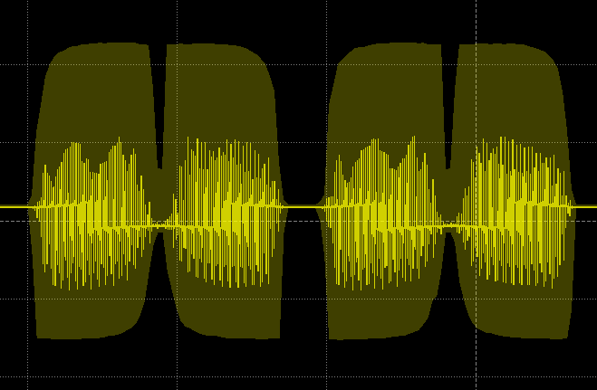

The Team
Shane Kelly, Carl Moser, Nathan Yee
Background
The foundation of this project is creating a wave and outputting it with an Arduino's PWM pin. The most basic waveform is a square wave oscillating between values of 0 and 255. The Arduino’s Timer 2 (TCNT2) counts from 0 to 255 before overflowing and restarting its count at 0. The timer knows when to overflow by comparing its value to the value stored in the “Output Compare Register” (OCR1A). We can change the value at which TCNT2 overflows (and thus, the wave's frequency) by adjusting the register value stored in OCR1A.
When the calculated wave is played to a speaker, the wave will sound choppy because an Arduino can only simulate analog output values by slamming its PWM pin from 0 to 255 at different duty cycles. A DAC must be used to convert these digital waves to smooth analog waves - in our case we used a 1-bit DAC that low-passed the wave to smooth it out.
After a wave of a specified frequency can be played on the Arduino, then serial commands simply need to be sent to the Arduino to specify what frequencies should be played. Under the everything-is-a-file architecture, this can be accomplished by opening a serial port and writing the contents of a song file to the port.
Implementation
To implement the 1-bit DAC we start by creating a wavetable and populating it with sin wave amplitudes.
int wave[LENGTH]; // Storage for waveform
for (int i=0; i<LENGTH; i++) { // Step across wave table
float v = (AMP*sin((PI2/LENGTH)*i)); // Compute value
wave[i] = (int) (v+OFFSET); // Store value as integer
Then we create an interrupt service routine to update the position in the wavetable and the PWM's duty cycle:
ISR(TIMER2_COMPA_vect) { // Called when TCNT2 == OCR2A
static uint8_t index=0; // Points to each table entry
OCR1AL = wave[index++]; // Update the PWM output
__asm("NOP;NOP"); // Fine tuning
TCNT2 = 5; // Timing to compensate for ISR run time
}
We control the output frequency of our 1-bit DAC by setting the update time of our PWM signal, we modify the value of the Arduino register OCR2A according to the formula:
OCR2A = round((2000000.0 / LENGTH * (1.0 / freq))
Where 2000000.0 is the frequency of our timer in Mhz, LENGTH is the length of our wavetable, and freq is the desired frequency.
It is also important to note that the highest frequency of synthesizer is limited as the difference between OCR2A and the interrupt timing offset (5) must greater than or equal to 1. In this case, the highest frequency we can play is:
Max Frequency = 2000000.0 / (LENGTH * OCR2A) = 2000000.0 / (256 * 6) = 1307 Hz
Where OCR2A - TCNT2 = 6 - 5 = 1
Results
We have created an Arduino synthesizer that can be commanded to play a series of tones from an input file that specifies the frequency and duration of each sequential tone. The tones are played through a simple 1-bit DAC, which low-pass filters the output of the Arduino's PWM signals to create smooth waveforms.
The unfiltered signal outputted by the Arduino

Resources
Skill Builder: Advanced Arduino Sound Synthesis, Jon Thompson
Serial communications on an Arduino in C
Arduino port registers.
Usage
Playing song files using Arduino IDE
Upload code/arduino/arduino.ino to the Arduino Uno using the Arduino IDE.
Once the Arduino code has been uploaded, send the desired song file to the serial port that the Arduino is currently connected to. The -f option will set the song filename and the -p option will set the serial port.
cd ../stdinToSerial
make
./stdinToSerial -f twinkleTwinkle.csv -p /dev/ttyACM0
Playing single tones with C using AVR-DUDE
Compile the Arduino code and upload it to the Uno.
cd code/arduino
bash compile.sh listing1